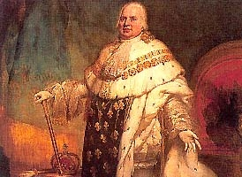

1814-18151re Restauration
Louis XVIIIRoi
FrancMaintenu
LysSymboles
Après l'abdication de Napoléon Ier en avril 1814, Louis XVIII rentre en France et inaugure la Première Restauration. Sur le plan monétaire, le franc germinal est maintenu. Les nouvelles monnaies reprennent les fleurs de lys et l'effigie du roi, tout en conservant le système décimal et les modules mis en place sous l'Empire.
Cette première phase est interrompue par le retour de Napoléon (Cent-Jours, mars-juin 1815). Après Waterloo, Louis XVIII revient définitivement sur le trône pour la Seconde Restauration.
Sources : infonumis.info · catalogues Le Franc & Gadoury
Les monnaies de la première Restauration
'" />20 Francs OR, LOUIS XVIII, Buste habillé
Date : 1815 A (Paris) ; 2.464.716 ex. (pour un total de fabrication de 5.634.709 ex. de 1814 à 1815)
Or 900 ‰ ; 21 mm ; 6.43g (théorique 6.45g)
Circulation : 1814-1928
Tranche en creux : * DOMINE SALVUM FAC REGEM
Avers : LOUIS XVIII ROI DE FRANCE - Buste de Louis XVIII à droite tête nue, les cheveux noués d'un ruban tombant derrière la tête, en habit avec le cordon de l'Ordre du Saint-Esprit ; signé Tiolier cursif au-dessous.
Revers : PIECE DE 20 FRANCS - Ecu de France couronné entre deux branches d'olivier, nouées à leur base, millésime entre différent et lettre d'atelier le long du listel sous la couronne d'olivier.
Références : F.517 G.1026